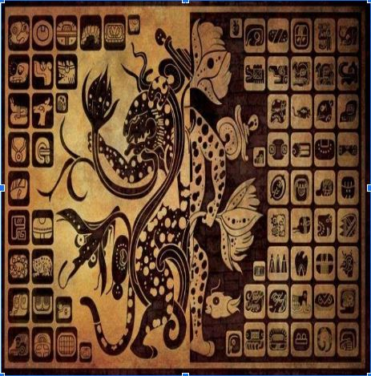

En el ámbito educativo es común que se tenga la necesidad de escribir diferentes textos, por ello
tanto docentes como estudiantes, deben contar con estrategias de redacción que les ayuden a
producir escritos que logren el propósito deseado. En contraparte del lenguaje oral, los textos
escritos poseen la ventaja de comunicar permanentemente y a distancia, es decir, la persona que
redacta quizá no esté en contacto directo con sus interlocutores, por ello es necesario reflexionar
acerca de cuál será la manera más adecuada de expresarse, tomando en cuenta el contexto de sus potenciales lectores.
Una buena redacción debe cumplir con ciertas características como lo son: claridad, concisión, coherencia, y cohesión, entre otras. Esto con el fin de lograr captar la atención de los potenciales lectores y de alcanzar los objetivos deseados.
A continuación, te compartimos una serie de consejos que te ayudarán en la redacción de tus escritos, es preciso señalar que estas recomendaciones son parte del proceso que siguen los escritores expertos, y te serán útiles para cualquier tipo de texto que necesites redactar:
- Establece para qué vas a escribir y lo que deseas comunicar:
- Es necesario que se tenga claro el propósito que se busca con el texto que se redactará.
- Define a quiénes estará dirigido el texto:
- Delimita quiénes son los posibles destinatarios.
- Elige el tipo de texto que escribirás:
- De acuerdo a lo que deseas comunicar con tu texto y a tus destinatarios precisa el tipo de lenguaje que usarás (formal o informal), con base en ello, elige el tipo de texto que mejor se ajuste.
- Lee y analiza ejemplos del tipo de texto que escribirás:
- Revisa la organización y las partes que tiene.
- Organiza las ideas que son necesarias para el contenido:
- Para esto toma en consideración el propósito, define cómo comenzará el texto y que seguirá después.
- Escribe una primera versión de tu texto:
- Atiende, en la medida de lo posible, lo que has planeado. Para darle coherencia y cohesión a las oraciones y los párrafos utiliza nexos y conectores textuales.
- No escribas como hablas:
- El lenguaje escrito es distinto al hablado, por ello es recomendable usar frases cortas, sé conciso y claro en lo que deseas comunicar.
- Lee tu texto las veces que sea necesario:
- Verifica que cumpla con los propósitos establecidos y que tenga suficiente claridad.
- Quizá sea necesario repetir este paso varias veces, por lo que es recomendable apoyarte en algún amigo o compañero que valore tu borrador escrito.
- Corrige el texto atendiendo lo siguiente:
- Que sea coherente y claro, que haya una relación lógica entre oraciones y párrafos, que tenga una correcta ortografía y puntuación, y que la caligrafía o legibilidad de la tipografía empleada sea pertinente.
